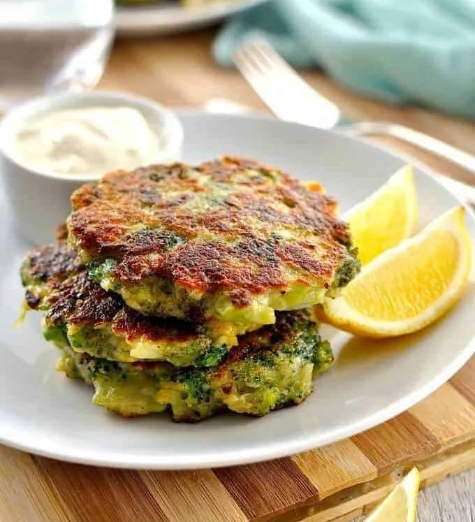

--Broccoli Fritters--

A perfect side ...
Broccoli fritters are a perfect side if you are looking
for something filling and rich in protein. Broccoli is low
in histamine and rich in magnesium, potassium, selenium,
calcium, iron, B vitamins, and vitamins A, C, E, and K.
Thanks to the garlic, onion, and pepper, this side offers
anti-inflammatory properties as well.
Yield: 6-8 fritters
Ingredients:
- 2 small heads of broccoli or one large, cut into florets,
steamed, and cooled (approximately 3 cups)
- 1/2 onion, minced
- 2 garlic cloves, minced
- 2 eggs, beaten
- 1 tablespoon salt
- 1/2 teaspoon pepper
- 1 teaspoon garlic powder
- 1 teaspoon onion powder
- 2/3 cup cassava flour (option to replace flour with
nutritional yeast)
Directions:
- Place steamed broccoli in a food processor and pulse until
broccoli is small evenly sized pieces about the size of a
pea. You can also do this with a knife.
- Transfer to a bowl and stir in the onion, garlic, salt,
pepper, garlic powder, onion powder, and egg. Stir to
combine then add the flour and mix. The mixture will be
wet but if it's too wet to form into patties, add another
1-2 tablespoons cassava flour.
- Scoop approximately 1/4 cup of broccoli mixture and gently
form into a patty then place into the air fryer. Repeat with
the remaining fritter dough, but bake in batches, with just
a single layer for each batch.
- Cook at 400 for 10 minutes, carefully flipping the fritters
over halfway through cooking.
Back Home